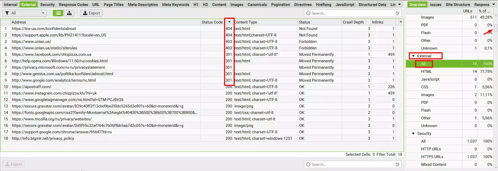
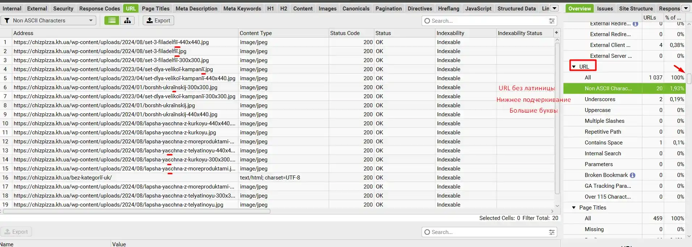
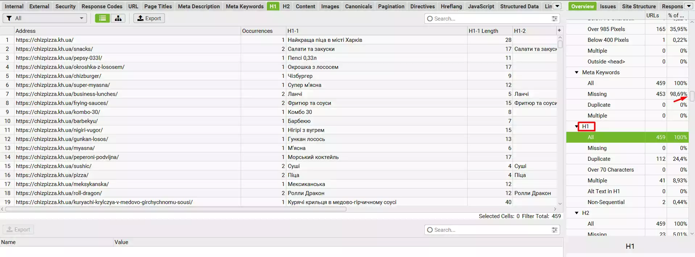
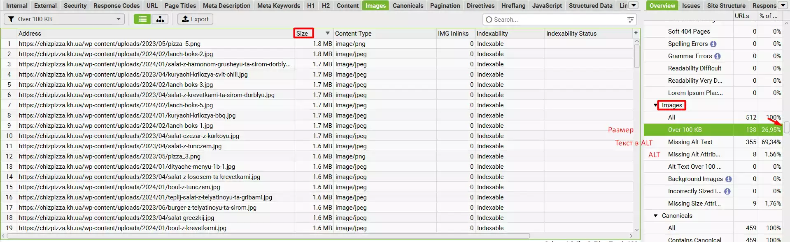
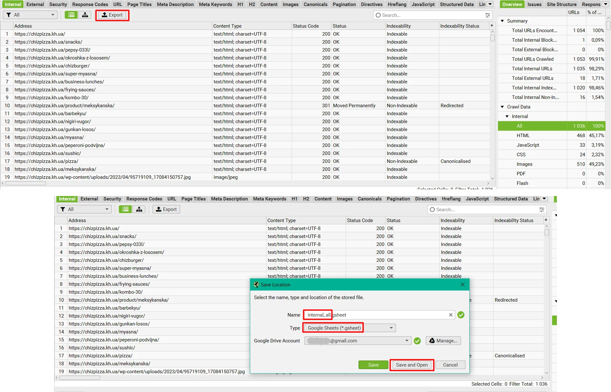
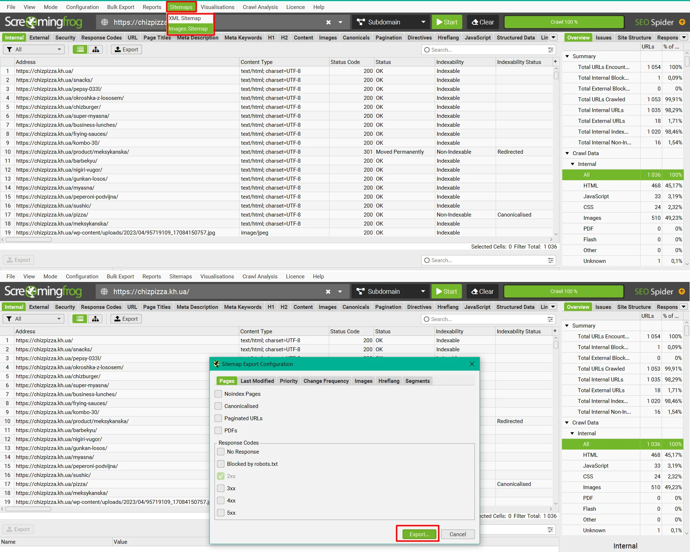
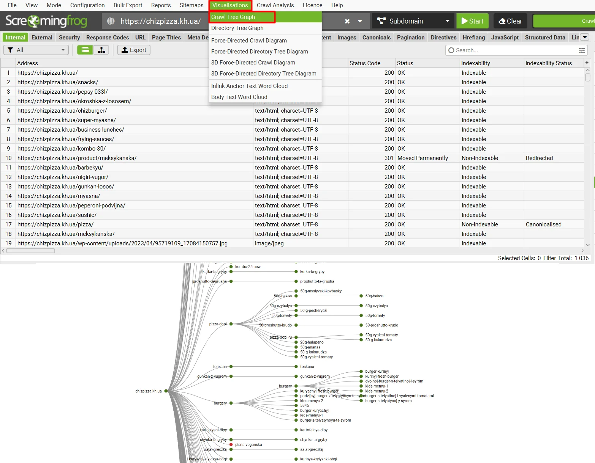

SCREAMING FROG ДЛЯ ПОЧИНАЮЧИХ
У цій статті я зібрав короткий мануал для початківців SEО-фахівців, які займаються оптимізацією, в якій їм допоможе Screaming Frog. Я опишу найголовніші функції, необхідні для аналізу сайту, без зайвої води та непотрібних функцій.
Як сканувати сайт?
Отже, почнемо сканувати сайт. Все дуже просто, вставляємо домен у верхній рядок у програмі та натискаємо кнопку Start.

Тут трапляється, що сайт закрив сканування для таких програм, як Скрімінг Фрог. У такому випадку, у верхній панелі ми натискаємо Configuration > User-Agent і у вікні вибираємо Google (Desktop) і тиснемо OK. Після цього натискаємо Start.

Далі, чекаємо, поки програма відсканує весь сайт.
Що робити після сканування сайту?
Ми відсканували сайт і бачимо перед собою багато панелей, стовпців та інше. Зараз я поясню найпотрібніші параметри, які нам потрібні.

Перше, це велика таблиця з даними про посилання, у ній ми можемо знайти найнеобхіднішу інформацію - код відповіді (200, 300, 400, 500), title, description, H1. Стовпці можна виставляти у будь-якому порядку, можете виставити, як у мене на попередньому скріншоті. Також, натиснувши на назву стовпця, ми можемо відсортувати дані від А до Я, від Я до А, від більшого до меншого, від меншого до більшого.

На минулому скріншоті я відсортував Status Code за зменшенням, і ви могли помітити, що на нашому сайті є 404, 302 та 301 посилання. І тут найголовніше питання.
Де на сайті знаходиться потрібне посилання?
Щоб знайти необхідне посилання у Screaming Frog, необхідно натиснути на посилання і в нижній панелі вибрати Inlinks. Перший стовпець - це сторінка, на якій знаходиться бите посилання.

Ось так працює це на практиці.

Як відсортувати лише сторінки?
За попередніми скріншотами ви помітили, що програма просканувала абсолютно всі файли, але нам потрібна інформація лише про сторінки сайту. Для цього нам знадобиться бічна панель сайту, в Internal вибираємо HTML і у нас сортуються лише сторінки.

Як переглянути вихідні посилання з сайту?
Далі, я вам покажу всі функції бічної панелі. У External натискаємо All і програма показує всі вихідні посилання нашого сайту. Тут ми можемо побачити посилання з небажаними кодами відповідей (300, 400, 500).
Щоб дізнатися, де вони знаходяться на сайті, прочитайте вище під заголовком "Де на сайті знаходиться потрібне посилання?".
Інформація про посилання на сайті
У бічній панелі є корисна властивість URL, вона показує помилки урла - латинські літери, нижнє підкреслення, великі літери тощо.
Інформація про title та description
У бічній панелі на вкладках Page Titles та Meta Description є інформація про тайтл та дескрипшен. Можна переглянути відсутні метатеги, дублікати, надто короткі або надто довгі.

Такі ж дані можна дізнатися із вкладки H1 про заголовок H1.
Робота із зображеннями
У бічній панелі на вкладці Images знаходяться фільтри, за допомогою яких можна виявити зображення з великою вагою, зображення без атрибуту ALT, зображення без тексту в атрибуті ALT тощо.
Як вивантажити дані?
Коли ви знайшли необхідні дані, ви можете вивантажити їх в Excel або Google Sheets для подальшої роботи з ними. Щоб розвантажити, натисніть Export. Далі придумайте назву документа відмінну від стандартного, потім виберіть Type - Google Sheets, заздалегідь підтвердивши пошту для вивантаження і натисніть Save and Open або просто Save.
Створити Sitemap
Є адмін-панелі такі як Wordpress або OpenCart, які генерують сайтмап самі, але якщо немає такої можливості, то нам допоможе Скрімінг Фрог. Необхідно у верхній панелі натиснути Sitemaps, далі вибрати XML Sitemap, якщо потрібна карта сторінок сайту, та Images Sitemap, якщо потрібна карта зображень сайту. У вікні, натискаємо кнопку Export.
Дерево сайту
У Скрімінг Фрозі є можливість створити дерево сайту, це допоможе зрозуміти вкладеність сторінок і категорій. Для цього натисніть Visualisations > Crawl Tree Graph. Є кілька видів "дерев", які можете самостійно ознайомитися з усіма.
Найголовніший секрет
Перед тим, як писати цю статтю, я прочитав два повні мануали по Скрімінг Фрогу, щоб не пропустити якийсь пункт, і після прочитання відкрив для себе нову інформацію, яку не знав раніше. Коли освоїте базові навички програми, то не зупиняйтеся та читайте нові статті та вивчайте інтерфейс самі.